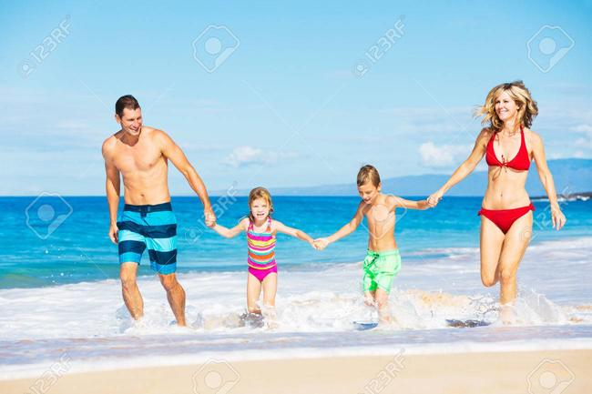

Visita O Rosal
Visita Oia
Visite o maravilloso concello da guarda
No concello da guarda poderás encontrar cousas tan fermosas como un Guardés no seu habitat natural
ou percibir o vacío existencial mentras contemplas as nosas maravillosas praias

¡¡¡¿¿¿QUE PODO FACER NA GUARDA???!!!
Comer langosta
Comer langosta
Comer langosta
Comer langosta
- Coffee
- Tea
- Milk
Visita i-rochiño
Pasos a seguir:
- Pasito palante
- Pasito patras
- Vuelta
Pasos a seguir:
- Pasito palante
- Pasito patras
- Vuelta